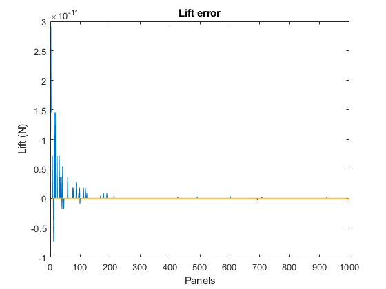
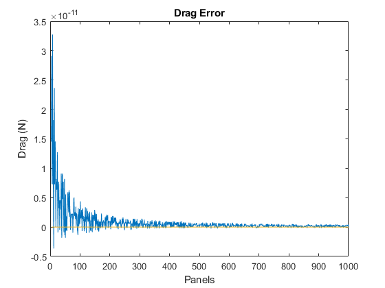
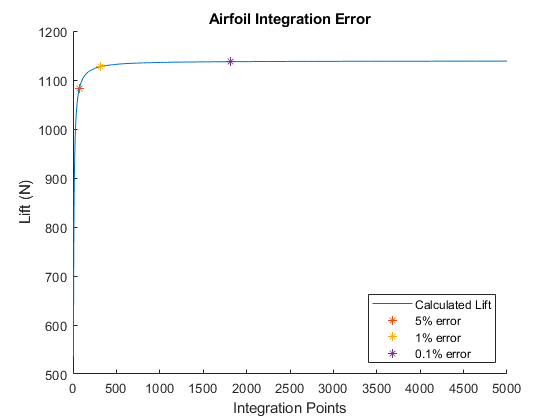

ASEN 3111 - Computational Assignment 01 - Main
We are trying to find the effect of the number of integration points or panels on the accuracy of the lift and drag of objects.
Author: Samuel Razumovskiy Collaborators: None Date: 9/5/2019 (last revised: 9/19/2019)
Contents
Problem 1
clear,clc,close all toL = zeros(997); toD = zeros(997); i = 1; found = false; panels = 4:1000; % N is the number of panels for N=panels % N since we want half the panels for upper and lower and twice as many % sub panels as panels +1 for the extra point thetaUp = linspace(0,pi,N+1); thetaLo = linspace(pi,2*pi,N+1); rho = 1.225; % kg/m^3 V = 30; % m/s pfree = 101.3*10^3; % Pa % Pressure distribution calculations pUp = (1-4*sin(thetaUp).^2).*(1/2*rho*V^2)+pfree; pLo = (1-4*sin(thetaLo).^2).*(1/2*rho*V^2)+pfree; % Seting up the integration equations given in the book for lift and % drag intLup = pUp.*cos(pi/2-thetaUp); % Pa intLlo = pLo.*cos(-pi/2-thetaLo); % Pa intDup = pUp.*sin(pi/2-thetaUp); % Pa intDlo = pLo.*sin(-pi/2-thetaLo); % Pa % Integrating the lift and drag toLup = mySimp(N,intLup); % N/m toLlo = mySimp(N,intLlo); % N/m toDup = mySimp(N,-intDup); toDlo = mySimp(N,intDlo); % Since L=N and D=A this calculation is valid toL(i) = toLlo-toLup; % N/m toD(i) = toDlo+toDup; % N/m if i ~= 1 if abs(toL(i)-toL(i-1))<0.001 && abs(toD(i)-toD(i-1))<0.001 && found ~= true noPanels = N; found = true; end end i = i+1; end figure(1) plot(panels,toD) xlabel("Panels") ylabel("Lift (N)") title("Lift error") figure(2) plot(panels,toL) xlabel("Panels") ylabel("Drag (N)") title("Drag Error") % Since L = 0 panels = (find(abs(toL)<0.001,1)+7)/2; fprintf("The number of panels required to get an accuracy of 0.001N is %d",panels)
The number of panels required to get an accuracy of 0.001N is 4 
Problem 2
clear,clc,close all load Cp % Initializing values j = 1; p5 = false; p1 = false; % Givens c = 2; % m alpha = 9; % deg V = 30; % m/s rho = 1.225; % kg/m^3 pinf = 101.3*10^3; % Pa t = 12/100; % /c % Range of integration points points = 5:5000; % Initializing lift and drag vectors L = zeros(size(points)); D = zeros(size(points)); for p=points % Base of trapazoid for integration base = c/p; x = linspace(0,c,p); % m y = t/.2.*c.*(0.2969.*sqrt(x./c)-0.1260.*(x./c)-0.3516.*(x./c).^2+... 0.2843.*(x./c).^3-0.1036.*(x./c).^4); % m theta = zeros(size(x)); % An inital theta of -pi/2 since it is the leading edge theta(1) = -pi/2; for i=1:length(x)-1 theta(i+1) = -atan((y(i+1)-y(i))/(x(i+1)-x(i))); end % Calculation of the coefficient of pressure cPup = fnval(Cp_upper,x./c); cPlo = fnval(Cp_lower,x./c); % Calculation of the pressure upper and lower Pup = cPup*1/2*rho*V^2+pinf; Plo = cPlo*1/2*rho*V^2+pinf; % Set up for Normal and Axial force integration, not actual Normal % and Axial forces NPup = Pup.*cos(theta); NPlo = Plo.*cos(theta); APup = -Pup.*sin(theta); APlo = Plo.*sin(theta); % Integrating for the Normal and Axial forces N = myTrapz(base,NPlo)-myTrapz(base,NPup); A = myTrapz(base,APlo)+myTrapz(base,APup); % Calculating Lift and Drag from Axial and Normal L(j) = N*cosd(alpha)-A*sind(alpha); D(j) = N*sind(alpha)+A*cosd(alpha); j = j+1; end % Finding the number of integration points needed for the given relative % errors for i = 1:numel(L) if p5 == false && abs(L(end)-L(i))/L(end) < 0.05 error5 = i+4; lift5 = L(i); p5 = true; elseif p1 == false && abs(L(end)-L(i))/L(end) < 0.01 error1 = i+4; lift1 = L(i); p1 = true; elseif abs(L(end)-L(i))/L(end) < 0.001 error10th = i+4; lift10th = L(i); break end end fprintf("Using 5000 points for the 'Actual' lift you would need\n") fprintf("%d points to get an accuracy of 5%%\n",error5) fprintf("%d points to get an accuracy of 1%%\n",error1) fprintf("%d points to get an accuracy of 0.1%%\n",error10th) figure(3) hold on plot(points,L) plot(error5,lift5,'*') plot(error1,lift1,"*") plot(error10th,lift10th,"*") xlabel("Integration Points") ylabel("Lift (N)") title("Airfoil Integration Error") legend("Calculated Lift", "5% error", "1% error","0.1% error","location","southeast")
Using 5000 points for the 'Actual' lift you would need 73 points to get an accuracy of 5% 313 points to get an accuracy of 1% 1819 points to get an accuracy of 0.1%
Functions Called
The following functions were built and called as part of this assignment.
function [Out] = mySimp(N,pres) %mySimp Uses the composite Simpson's rule to integrate around a circle % Takes an input of the number of panels and a pressure distribution, then % uses a composite Simpson's rule for a line integral over a circle tot = zeros(length(pres),1); h = 2*pi/N; for k=2:2:N tot = pres(k-1)+4*pres(k)+pres(k+1); end Out = sum(tot)*h/3*.5; end function [Out] = myTrapz(base,height) %myTrapz Use the composite trapazoidal rule to integrate anything % Given the width between each point and a vector of heights the function % uses the trapazoidal rule to give an approximate solution to the % integral of the given values out = zeros(size(height)); for i=1:length(height)-1 out(i) = base/2*(height(i)+height(i+1)); end Out = sum(out); end